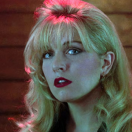

Favorite characters!
Just another section about killing cringe and trying to verbalise/analyse why I find something interesting, the media characters edition this time. Plus, I'm genuinely curious about the, well, statistics :D
Probably won't have any specific logic behind the characters order, nor do I plan to group same setting characters together. Maybe I will keep more or less close archetypes together or something like that, but, well, we'll see. For now that's in a just let it exist first stage anyway.
/ last upd. 30 oct 2026
Sybil Reisz
Transistor
No, not another placeholder cameo this time! I love everything about this game and oh I do adore everything that's wrong with this woman. My precious jealous and obsessive mewmew, the first actual boss of the game and a deeply tragic character, in my opinion (on other hand, who in this game isn't?)

Laura Palmer
Twin Peaks
My favorite narative haunter, what else can I say. Well, no, I can say quite a lot, in fact, just not today, im sleepy